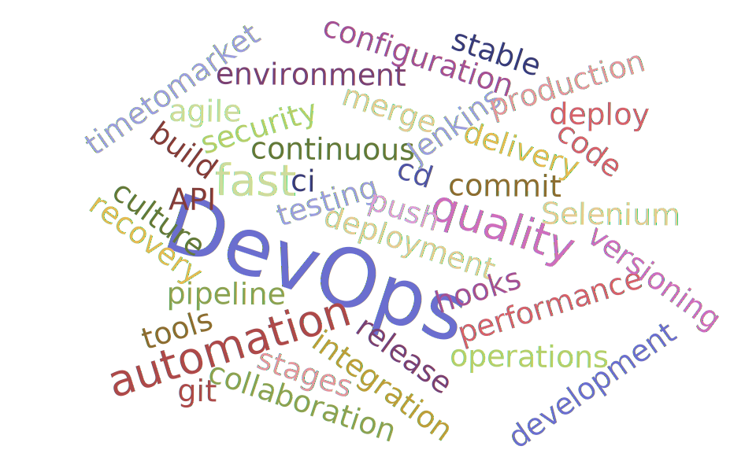

## Testing in Continuous Delivery #### Adrian Moldovan

### What is DevOps? <p class="fragment"><span class="highlight">Dev</span> (Development) + <span class="highlight">Ops</span> (Operations)</p> <p class="fragment">A <span class="highlight">culture</span> of collaboration between dev and ops</p>
### What DevOps is not <p class="fragment">A job title</p> <p class="fragment">A tool</p>
Brief history



### Agenda - DevOps culture - DevOps practices - DevOps tools - Testing in DevOps culture
### DevOps culture Collaboration between Dev and Ops <!-- .element: class="fragment" data-fragment-index="1" --> Provide both speed (Dev) and stability (Ops) <!-- .element: class="fragment" data-fragment-index="2" --> - Fast time to market <!-- .element: class="fragment" data-fragment-index="3" --> - Few production failures <!-- .element: class="fragment" data-fragment-index="4" --> - Immediate recovery <!-- .element: class="fragment" data-fragment-index="5" -->
### DevOps practices
### Build automation - Fast <!-- .element: class="fragment" data-fragment-index="1" --> - Consistent <!-- .element: class="fragment" data-fragment-index="1" --> - Repeatable <!-- .element: class="fragment" data-fragment-index="1" -->
### Continuous integration Frequent merge of code changes
### Continuous delivery Every code change is <span class="highlight">ready to deploy</span> in production
### Continuous deployment Every code change is <span class="highlight">deployed</span> to production
### DevOps tools
### Testing in DevOps culture
### Automation is key
Don’t automate just for the sake of automation
Test code is just as important as the application code – treat is as production code
Test data management
Use parallel test execution <aside class="notes" data-markdown> - tests need to be fast </aside>
1 min <!-- .element: style="font-size: 264px;" --> execution time for you longest test
Build atomic tests <aside class="notes" data-markdown> - take care of app state before test - Use API - Use DB - Use cookies - Use JavaScript </aside>
Always have testability in mind
Exploratory testing is needed to discover not so obvious defects
### Test types - unit <!-- .element: class="fragment" data-fragment-index="1" --> - integration <!-- .element: class="fragment" data-fragment-index="2" --> - functional <!-- .element: class="fragment" data-fragment-index="3" --> - performance <!-- .element: class="fragment" data-fragment-index="4" --> - security <!-- .element: class="fragment" data-fragment-index="5" -->
### Metrics
Code quality metrics
Unit test coverage
Defect resolution time
Defect Escape Rate
Regression test duration
Response time deviation
Production downtime during deployment
Lead time (time from requirement to done)
Cycle time (time from commit to production)
Failure rate (% of changes that produce a failure)
Mean time to recover (MTTR) (how long to fix a build)
### References
 https://github.com/adimoldovan/cd-workshop